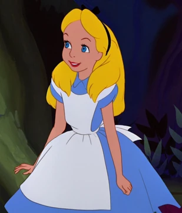

Who is Alice
Alice is the curious and imaginative protagonist of Alice’s Adventures in Wonderland. She is a young girl whose sense of wonder and bravery leads her to explore the strange, unpredictable world of Wonderland. Throughout her journey, Alice questions the nonsensical rules around her, navigates bizarre situations, and interacts with a cast of eccentric characters. Her curiosity, intelligence, and determination make her both a relatable and inspiring figure, guiding readers through the whimsical chaos of Carroll’s creation.
Appearance
In Disney’s 1951 Alice in Wonderland cartoon, Alice is depicted as a young girl with blonde hair tied back with a black ribbon, wearing a light blue dress with puffed sleeves, a white pinafore, white stockings, and black Mary Jane shoes. Her wide eyes and expressive face convey curiosity, innocence, and wonder, perfectly reflecting her adventurous spirit. The simplicity and brightness of her outfit make her stand out in the colorful, chaotic world of Wonderland, emphasizing her role as both observer and explorer in the story.
Author's Note
Lewis Carroll portrayed Alice as a curious, intelligent, and imaginative young girl whose sense of wonder drives the story. Through her adventures in Wonderland, Carroll explores the perspective of a child encountering a world that defies logic and reason, highlighting her adaptability, courage, and curiosity. Alice’s questions, observations, and reactions allow readers to navigate the strange, whimsical world of Wonderland alongside her, making her both a participant in and an interpreter of the story’s playful absurdities. Through Alice, Carroll reflects on childhood curiosity, the process of learning, and the tension between order and chaos.